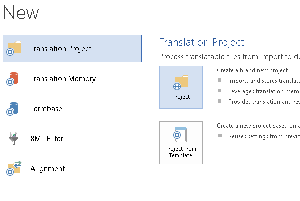
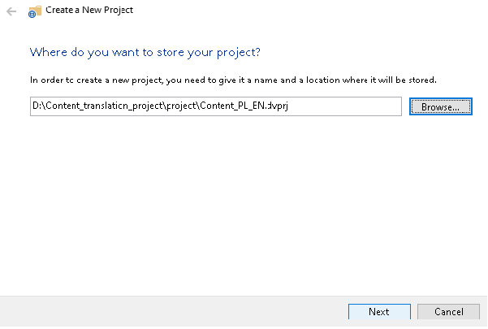
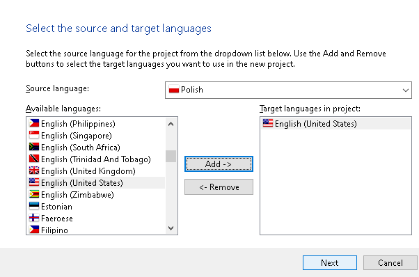
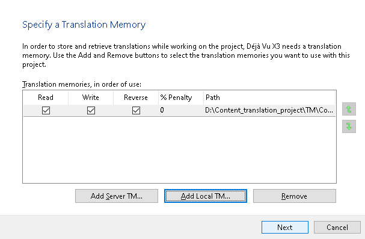
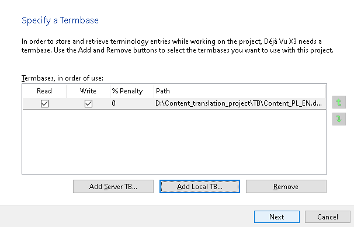
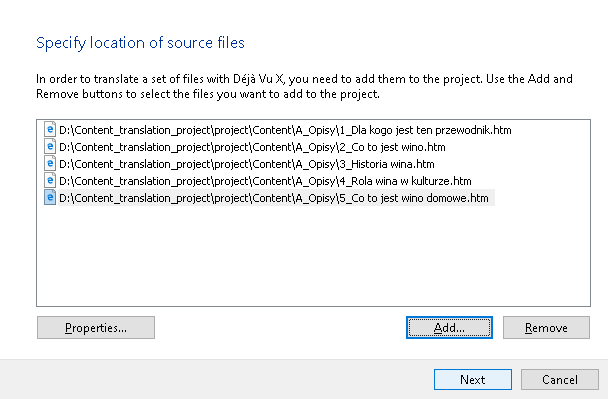
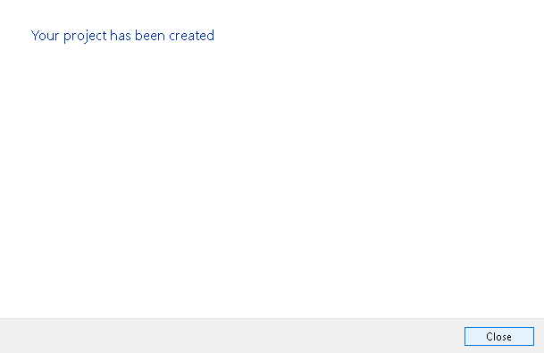
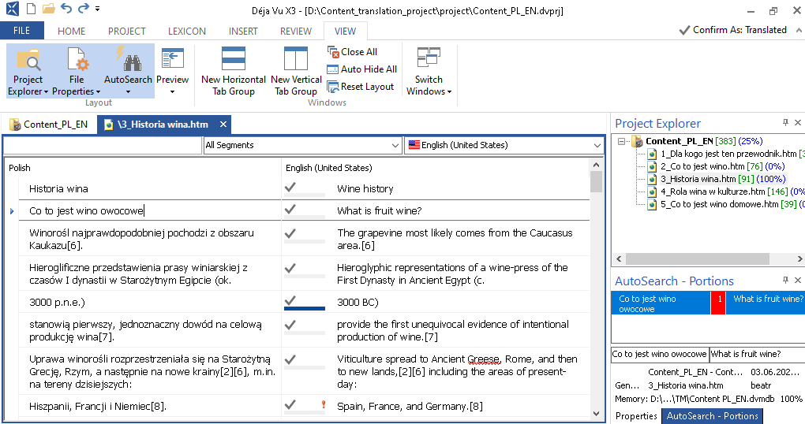
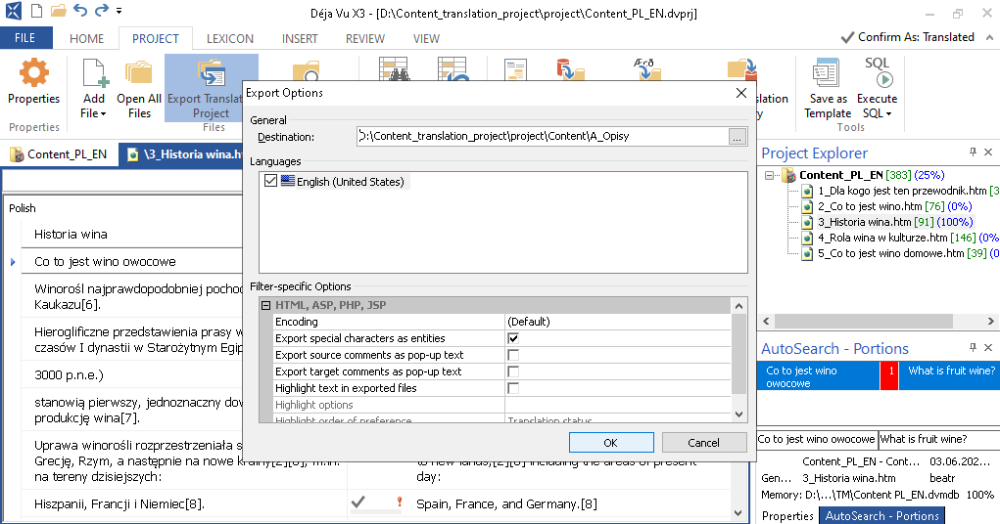
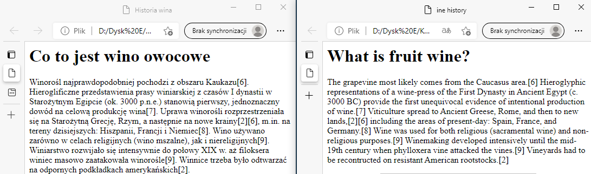

Example: how to localize file using Déjà Vu X3?
Example: documentation files prepared using MadCap Flare (.htm) and localized using Déjà Vu X3.
To localize the documentation files, create a project in Déjà Vu X3.
- Open Déjà Vu X3.
-
On the Déjà Vu X3 start screen, in the section labelled New, click
onTranslation Project and next Project:
-
New Project Wizard appears. Specify where do you want to store your new
project.
-
Click Next. On the next page, select the source language and the target
language(s) for your project and click Next.
-
Choose to use an existing translation memory (or create a new one) and click
Next.
-
Select or create the Termbase for this project and click Next.
-
Note: Like other CAT tools, Déjà Vu X3 also allows you to connect to the Machine Translation service. More information can be found in the appropriate CAT software documentation.The next page optionally allows you to specify what Machine Translation provider you want to use for the project. Specify the appropriate data, or not, click Next and go to the next page. Select a client and a subject for your project or use the default ones.And click Next.
-
Add source files to your project.
-
Click Next and your project will be created. A displayed wizard will
show the progress of the import process.
-
When the process is finished, click Close. The main interface of Déjà Vu
X3 is displayed, and then click the files and translate them.
-
When the translation process is finished, the final step is to export the
project, i.e., to generate the translated .htm files. Select destination
folder and click Export. Then, it will validate all the translated
sentences, checking for problems with tags. If Déjà Vu X3 finds a problem, it
will prompt you to fix it. Fix the problem and click OK. Click
Yes, if Déjà Vu X3 asks you to add spaces at the end of each segment
(each sentence in the exported file will be separated by space, as they should
be.)
-
A subfolder will be created inside the export directory and named as the code
for the specific locale of the target language. Open your source and target
files and check them according to your established criteria.
Figure 1. Example source and target files 